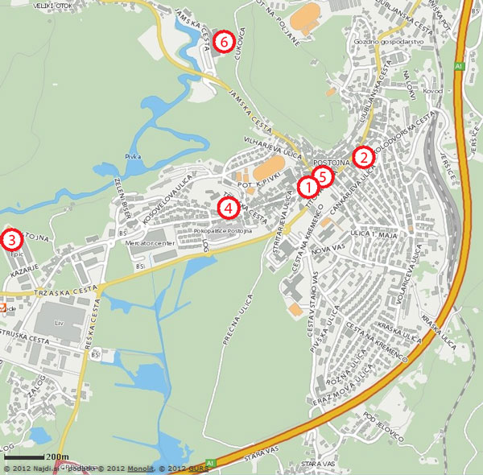

Places to stay – Accomodation possibilities
The participants (except invited) are asked to book their rooms in hotels or private rooms directly by themselves. For intormation and reservations you can contact the following addressses:

(1) Hotel Kras****
Tržaška cesta 1
SI-6230 Postojna
Tel: +386 5 700 23 00
Fax: +386 5 700 23 56
E-mail: booking@hotel-kras.si
Web page: http://www.hotel-kras.si
(2) Sport hotel & restaurant***
Kolodvorska ulica 1
SI-6230 Postojna
Tel: +386 5 720 22 44
Fax: +386 5 720 22 40
E-mail: info@sport-hotel.si
Web page: http://www.sport-hotel.si
(3) Hotel epicenter***
Kazarje 10
SI-6230 Postojna
Tel: +386 5 700 22 00
Fax: +386 5 700 22 44
E-mail: booking@epicenter-on.net
Web page: http://www.hotel-epicenter.si
(4) Youth Hostel Proteus
Tržaška cesta 36
SI-6230 Postojna
Tel: +386 5 726 52 91
Fax: +386 5 726 22 20
E-mail: recepcija.sgls@guest.arnes.si
Web page: http://www.hihostels.com/dba/hostel092539.en.htm?linkid=980018
(6) Postojnska jama (the cave)
Jamska cesta 30
SI – 6230 Postojna
Tel:+386 5 700 01 00
Fax: +386 5 700 01 30
E-mail: info@postojnska-jama.si
Web page: http://www.postojnska-jama.si/eng/
Camping Pivka jama***
(5 km from Postojna; camp and bungalows)
Veliki Otok 50
SI-6230 Postojna
Tel: +386 5 720 39 93
Fax: +386 5 726 53 48
E-mail: avtokamp.pivka.jama@siol.net
Web page: http://www.venus-trade.si
Speleocamp Laze
(15 km from Postojna; camp, apartments and group room)
Laze 6b
SI-1370 Logatec
Tel: +386 1 754 47 60
E-mail: info@speleocamp.com
Web page: http://www.speleocamp.com
Additional information about Postojna and private rooms:
(5) Kompas Postojna, turistična agencija, d.o.o.
Titov trg 2a
SI-6230 Postojna
Tel: +386 5 721 14 80
Fax: +386 5 721 14 87
E-mail: info@kompas-postojna.si
Web page: http://www.kompas-postojna.si